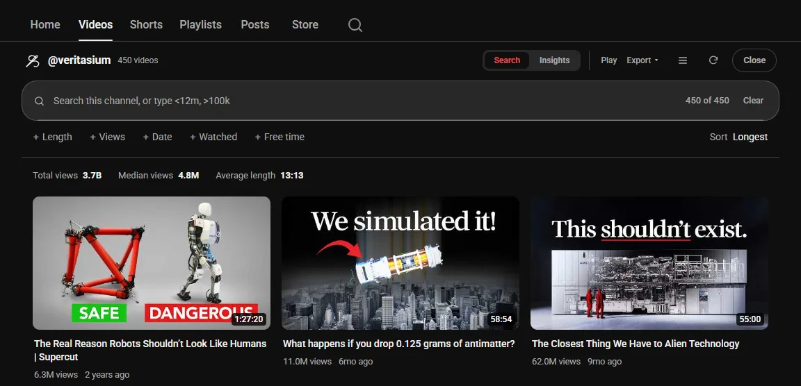

Guide 08·Channels
How to find the longest video on a YouTube channel.
Updated 12 October 2026
Short answer
YouTube can't do it. A channel's Videos tab sorts by Latest, Popular or Oldest, never by length, and the channel's search box only matches words. To find the longest video on a channel, open its Videos tab with Needle, a free Chrome extension, and set Sort to Longest. It reads every upload first, so the first video really is the channel's longest. The same panel searches the channel by keyword and exact length.
01·On YouTube
What a YouTube channel page can do
- Sort: the chips above the Videos grid switch between Latest, Popular and Oldest. No length.
- Search: the magnifying glass at the end of the channel's tabs finds videos by the words in them. It can't filter by length or put anything in order.
YouTube's main search doesn't help either. Its Filters have three length buckets, under 3 minutes, 3 to 20 and over 20, which narrow results but never sort them, and they cover all of YouTube, not one channel.
02·The gap
Why scrolling doesn't work either
Every thumbnail shows its length, so in theory you could look. In practice a channel's page loads about 30 videos at a time as you scroll, so a channel with 600 uploads means scrolling all of them in and reading every timestamp, and Ctrl+F can't search for "longest".
03·With Needle
Find the longest video with Needle
- Open the channel's Videos tab.
- Press the needle button in the bottom right corner, or Alt+Y.
- Needle reads every upload, not only the ones on screen.
- Set Sort to Longest. The first video is the longest one on the channel. Shortest works the other way round.

04·Filters
Search the channel by length
Type a word, a length, or both into the panel's box, and the sort keeps working on what's left:
robot >30m | Videos with robot in the title, over 30 minutes |
>1h | Everything longer than an hour |
<10m | Everything shorter than 10 minutes |
>20m <40m | Between 20 and 40 minutes |
unwatched >1h | Long videos you haven't started |
after:2025 | Uploaded after 2025, to find the longest recent one |
The Length button below the box does the same with presets, and Free time shows only what fits in the minutes you have.
05·Lists and search
Playlists, Watch Later and search
The same panel opens on any playlist, yours or anyone's, and on your Watch Later, with the same Sort. Shortest first on Watch Later is a quick answer to "what can I watch right now".
From YouTube's search bar, add sort:longest or sort:shortest to a search: lofi mix sort:longest puts the results Needle reads in order of length, and in:wl sort:shortest lists your saved videos shortest first.
06·Questions
Questions?
Can YouTube sort a channel by length?
No. A channel's Videos tab sorts by Latest, Popular or Oldest, and that's all. Length isn't a sort option anywhere on YouTube.
Can I search a channel for a word and a length at once?
Yes. Type both into the panel's box, like robot >30m, and you get the channel's videos with that word in the title that run over 30 minutes, still in the order you picked.
Does it count Shorts?
No. Shorts are kept out of the channel list, since YouTube doesn't give them a length to sort on.
How big a channel can it sort?
The whole channel, up to the Video limit in the popup, 1,800 by default, which you can raise. A few hundred videos take a few seconds, then sorting is instant.
Does it work on my phone?
No. Needle is for YouTube in a desktop browser: Chrome, or another browser that installs extensions from the Chrome Web Store.
Is it free?
Yes. No account, no trial, no paid tier.